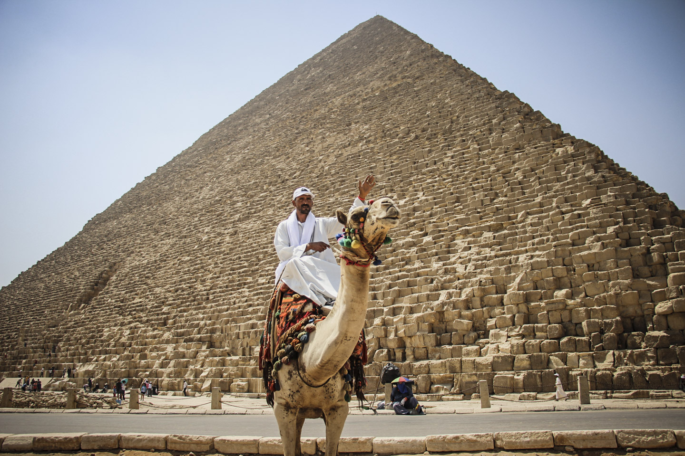

-
English
EGYPT, WHERE IT ALL BEGINS
A mythological place that led to one of the most fascinating civilizations in the ancient world.
On the plateau of Giza, 20 km far from the center of Cairo, the capital of the country, in north Africa in the far east of Sahara Desert, we find some of the most intriguing works on the planet, so spectacular that they don’t even seem to be of this world and raise doubts. Who built the Pyramids? There are many theories about aliens, gods, and higher beings. According to science, the Pyramids were made by thousands of people during many years of work. In spite of much mystery, the Pyramids are grand tombs that protect the bodies of the pharaohs so they are a meeting point between the world of the living and the world of the dead and unlike many people, they weren’t built by slaves. The construction site of the Pyramids turned to sacred ground and the entrance was restricted after its construction.
Despite being known for its millenary icons, Egypt also has been modernized, it has 97.55 million inhabitants currently. Cairo is a big city with a population of 9.5 million approximately, it has the same hectic lifestyle as any other capital as Sao Paulo, Tokyo or New York. In Cairo, the streets are showcases, full of local goods that delight the tourists as they can take a little of that trip back to their homes to remember a fantastic civilization. Cairo has been growing constantly, the population has tripled in the last 50 years and the metropolitan region exceeds 20 million.
Egypt is an Arabic country, the predominant religion is Islam (around 80% to 90% of the population are Muslims). The cuisine is also Arabic, so in restaurants, it’s common to find kofta (seasoned meat), mujadara (rice with lentils), michayriye (rice with angel hair noodles), falafel (bean sandwich). Falafel is one of the most popular sandwiches in the country: plan bread accompanied by delicious sauces and pates such as babaganuche (cream of chickpea and eggplant burned), lentil soups, carrots and more. Koshary is a mixture of rice, pasta, grains, and lentils served with tomato sauce and fried crispy onion. Karkadeh is the most traditional Egyptian tea prepared with a hibiscus flower.
The history of Egypt is marked by a single water line. The heroic crossing of the Nile dessert taught the Egyptians to dream considering Luxor the gate of paradise on the other side of the river. To show that heaven is stronger than the earth, suspended granite in the air, this delighted Europeans who took much of what they saw, like the Luxor obelisk that became one of the postcards of Europe. Fortunately, not everything has disappeared from the place, today, Luxor retains its majesty.
The Miracle of the Red Sea is produced in the middle of dunes, sun, heat, and sand. For those who come from the desert, it is a mirage to see the blue sky of that sea whose name is the Red Sea, surrounded by the Sinai desert, the Arabian desert, and the Sahara. This tourist place covers the biblical journey and all visiting Christians are happy to remember one of the most prominent Old Testament stories in which Moses crossed the Red Sea. The coastal strip on the western side of the Red Sea in Egypt is more than 1000 km long, with tourism being the main source of income. Hurghada has changed and has gone from being a fishing village to a city full of hotels and resorts.
The country's economy is strongly marked by tourism, but it also has petroleum as the main driving force of the country. It is a safe place if you obey the laws, norms, and customs of civilization. Being a tourist country, tourists will feel welcomed. It is a charming place where you can live a unique and majestic experience experiencing an ancient world in contrast to the modern.
-
Portugees
EGITO, ONDE TUDO COMEÇOU
Um lugar mitológico que deu origem a uma das civilizações mais fascinantes do mundo antigo
No planalto de Gizé, a 20km do centro de Cairo – a capital do país -, no norte da África, extremo leste do deserto do Saara, encontramos algumas das obras mais intrigantes do planeta, tão espetaculares que nem parecem deste mundo e geram dúvidas. Quem construiu as pirâmides? Existem muitas teorias como extraterrestres, divindades, seres superiores e até bichos. Para a ciência, as pirâmides foram feitas por milhares de pessoas durante muitos anos de trabalho. Apesar de tanto mistério, as pirâmides são grandes túmulos que guardam os corpos dos faraós, sendo assim um ponto de encontro entre o mundo dos vivos e o mundo dos mortos e ao contrário do que muitos pensam, não foram construídas por escravos. O local de construção das pirâmides se tornava então um solo sagrado, sendo a entrada restrita.
Apesar de ser conhecido por seus ícones milenares, o Egito também se modernizou, atualmente tem 97,55 milhões de habitantes. Cairo é uma grande cidade com aproximadamente 9,5 milhões de habitantes, possui o mesmo estilo de vida agitado como qualquer outra metrópole assim como São Paulo, Tóquio ou Nova York. No Cairo as ruas viram vitrines, cheias de artigos locais que encantam os turistas, que podem levar um pedacinho daquela viagem para suas casas de lembrança e recordação de uma civilização fantástica. Cairo não para de crescer, nos últimos 50 anos a população triplicou e a região metropolitana passa dos 20 milhões de habitantes.
O Egito é um país árabe, a religião predominante é islamismo ( cerca de 80% a 90% da população adere ao Islão). A culinária também é árabe, sendo assim, é comum encontrar nos restaurantes kafta (carne temperada com especiarias), mijadra (arroz com lentilhas), michayriye (arroz com macarrãozinho cabelo-de-anjo), falavel (sanduíche de favas) - aliás, o falafel é um dos sanduíches mais populares no país-, pão sírio acompanhados com molhos deliciosos e patês como o babaganuche (creme de grão-de-bico com berinjela queimada), sopas de lentilhas, cenoura entre outros. O koshary é uma mistura de arroz, massa, grãos e lentilhas, servido com molho de tomate e cobertura de cebolas fritas crocantes. Karkadeh é o mais tradicional chá egípcio preparado com a flor de hibiscos.
A história do Egito é marcada por uma única linha de água. A travessia heróica do Nilo pelo Deserto ensinou os egípcios a sonhar, considerando Luxor a Porta do Paraíso que ficava do outro lado do Rio. Para mostrar que o céu é mais forte que a Terra, suspenderam o granito no ar, isso encantou os Europeus que levaram muito do que viram, assim como o obelisco de Luxor que virou um dos cartões postais da Europa. Por sorte, nem tudo foi retirado do seu lugar, e com o que resta, Luxor mantém sua majestade.
O Milagre do Mar Vermelho surge em meio a dunas, sol, calor e areia. Para quem vem do deserto, é uma miragem ver o azul celeste desse mar que de vermelho só tem o nome, sendo cercado pelo deserto do Sinai, deserto da Arábia e do Saara. Esse ponto turístico refaz a jornada bíblica e todos os cristãos que visitam o lugar se emocionam de lembrar uma das histórias mais enfatizadas do Antigo Testamento em que Moisés atravessou o Mar Vermelho. A faixa costeira do lado ocidental do Mar Vermelho no Egito tem mais de 1000km, sendo o turismo a principal fonte de renda. Hurghada mudou, e de uma vila de pescadores, passou a ser uma cidade repleta de hotéis e resortes.
A Economia do País é marcada fortemente pelo turismo, mas também tem o petróleo como grande força motriz do país. É um lugar seguro se você obedecer às leis, regras e costumes da civilização. Por ser um país turístico, os turistas vão se sentir bem recebidos. De fato, é um lugar encantador e uma experiência única e majestosa, vivenciando um mundo antigo e em contrapartida, moderno.
-
 Spanish
Spanish
EGIPTO, DONDE TODO COMENZÓ
Un lugar mitológico que dio origen a una de las civilizaciones más fascinantes del mundo antiguo.
En la meseta de Giza, a 20 km del centro de El Cairo, la capital del país, en el norte de África, en el extremo este del desierto del Sahara, encontramos algunas de las obras más intrigantes del planeta, tan espectaculares que ni siquiera parecen ser de este mundo y generan dudas. ¿Quién construyó las pirámides? Hay muchas teorías como extraterrestres, deidades, seres superiores e incluso animales. Para la ciencia, las pirámides fueron hechas por miles de personas durante muchos años de trabajo. A pesar de tanto misterio, las pirámides son grandes tumbas que protegen los cuerpos de los faraones, por lo que son un punto de encuentro entre el mundo de los vivos y el mundo de los muertos y, a diferencia de muchas personas, no fueron construidas por esclavos. El sitio de construcción de las pirámides se convirtió en terreno sagrado y la entrada fue restringida.
A pesar de ser conocido por sus íconos milenarios, Egipto también se ha modernizado, actualmente tiene 97.55 millones de habitantes. El Cairo es una gran ciudad con aproximadamente 9,5 millones de habitantes, tiene el mismo estilo de vida agitado que cualquier otra metrópoli como Sao Paulo, Tokio o Nueva York. En El Cairo, las calles son vitrinas, llenas de artículos locales que deleitan a los turistas, que pueden tomar un poco de ese viaje a sus hogares para recordar una civilización fantástica. El Cairo ha estado creciendo constantemente, en los últimos 50 años la población se ha triplicado y la región metropolitana supera los 20 millones.
Egipto es un país árabe, la religión predominante es el Islam (alrededor del 80% al 90% de la población se adhiere al Islam). La cocina también es árabe, por lo que es común encontrar en los restaurantes kafta (carne sazonada), mijadra (arroz con lentejas), michayriye (arroz con fideos de cabello de ángel), falavel (sándwich de habas), por cierto, El falafel es uno de los sándwiches más populares del país: pan plano acompañado de deliciosas salsas y patés como babaganuche (crema de garbanzos con berenjenas quemadas), sopas de lentejas, zanahorias y más. Koshary es una mezcla de arroz, pasta, granos y lentejas, servido con salsa de tomate y cebolla crujiente frita. Karkadeh es el té egipcio más tradicional preparado con flor de hibisco.
La historia de Egipto está marcada por una sola línea de flotación. El heroico Cruce del Desierto del Nilo enseñó a los egipcios a soñar, considerando a Luxor la Puerta del Paraíso al otro lado del río. Para demostrar que el cielo es más fuerte que la tierra, suspendió el granito en el aire, esto deleitó a los europeos que tomaron gran parte de lo que vieron, al igual que el obelisco de Luxor que se convirtió en una de las postales de Europa. Afortunadamente, no todo se ha eliminado de su lugar, y con lo que queda, Luxor conserva su majestad.
El Milagro del Mar Rojo se produce en medio de dunas, sol, calor y arena. Para aquellos que vienen del desierto, es un espejismo ver el azul celeste de ese mar que solo tiene el nombre de rojo, rodeado por el desierto del Sinaí, el desierto de Arabia y el Sahara. Este lugar turístico recorre el viaje bíblico y todos los cristianos visitantes están encantados de recordar una de las historias del Antiguo Testamento más destacadas en las que Moisés cruzó el Mar Rojo. La franja costera en el lado occidental del Mar Rojo en Egipto tiene más de 1000 km de largo, siendo el turismo la principal fuente de ingresos. Hurghada ha cambiado, y de un pueblo de pescadores a una ciudad llena de hoteles y resorts.
La economía del país está fuertemente marcada por el turismo, pero también tiene al petróleo como la principal fuerza impulsora del país. Es un lugar seguro si obedece las leyes, normas y costumbres de la civilización. Al ser un país turístico, los turistas se sentirán bienvenidos. De hecho, es un lugar encantador y una experiencia única y majestuosa, que experimenta un mundo antiguo y en contraste moderno.